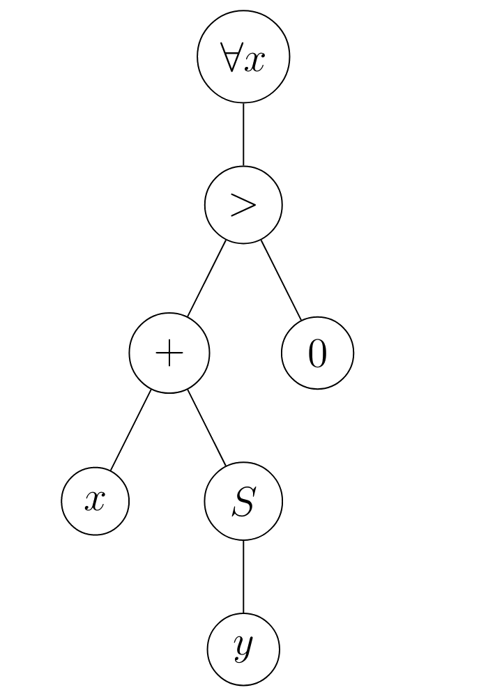

La logique est un domaine mathématique dont l'objet d'étude est l'ensemble des propriétés que l'on peut exprimer, leur valeur de vérité et la notion de démonstration. La logique propose un cadre formel pour manipuler ces notions, où l'on distingue la syntaxe, i.e. la manière d'exprimer les propriétés de la sémantique,i.e. des interprétations que l'on peut donner à la syntaxe.
Les démonstrations, vues en tant qu'objets mathématiques, ne seront étudiées qu'en MPI.
On décompose les propriétés que l'on cherche à exprimer pour faire ressortir leur structure logique. Les énoncés que l'on ne peut pas décomposer sont appelés atomes. En logique propositionnelle, on abstrait les atomes en des variables dites propositionnelles.
Soit $V$ un ensemble de variables propositionnelles. On définit inductivement l'ensemble $\mathcal{F}$ des formules de la logique proportionnelle par :
$\dfrac{x\in V}{x\in\mathcal{F}}$ $\dfrac{\varphi\in\mathcal{F}}{\neg\varphi\in\mathcal{F}}$ $\dfrac{\varphi_1\in\mathcal{F}\quad\varphi_2\in\mathcal{F}}{\varphi_1\vee\varphi_2\in\mathcal{F}}$ $\dfrac{\varphi_1\in\mathcal{F}\quad\varphi_2\in\mathcal{F}}{\varphi_1\wedge\varphi_2\in\mathcal{F}}$ $\dfrac{\varphi_1\in\mathcal{F}\quad\varphi_2\in\mathcal{F}}{\varphi_1\rightarrow\varphi_2\in\mathcal{F}}$
On appelle :
On appelle aussi équivalence le symbole $\leftrightarrow$ définit par $\varphi_1\leftrightarrow\varphi_2=(\varphi_1\rightarrow\varphi_2)\wedge(\varphi_2\rightarrow\varphi_1)$
Malgré leur nom, les symboles de la définition précédente n'ont aucune signification. Le sens des symboles tient du domaine de la sémantique. On parle ici de syntaxe abstraite. On peut utiliser une autre représentation pour les syntaxes abstraites, appelée grammaire, qui s'écrit comme suit :
$\varphi::=x|\neg\varphi|\varphi_1\vee\varphi_2|\varphi_1\wedge\varphi_2|\varphi_1\rightarrow\varphi_2$ où x parcourt $\vee$.
L'étude précise des grammaires relève du programme de MPI.
Les symboles $\neg,\vee,\wedge,\rightarrow$ et $\leftrightarrow$ sont appelés connecteurs logiques. Ce sont eux qui définissent la structure logique des énoncés. Le nombre d'arguments d'un connecteur logique est appelé son arité.
On représente généralement les formules de manière linéaire en ajoutant des parenthèses pour désambiguïser la lecture.
Par exemple, $p\vee q\wedge r$ peut se lire :
Par convention, la négation est prioritaire sur les autres connecteurs, donc $\neg p\vee q$ se lit $(\neg p)\vee q$ et pas $\neg(p\vee q)$.
En raison de leur définition inductive, les formules ont une représentation arborescente naturelle : chaque règle d'inférence utilisée définit un symbole de tête / connecteur principal qui est la racine du sous-arbre correspondant.
Exemple : $p\rightarrow(\neg q\vee r)$ est représentée par :
Remarque : On obtient un arbre (binaire) dont les nœuds internes sont les connecteurs logiques et les nœuds externes sont les atomes. L'arité d'un connecteur est l'arité du nœud correspondant.
L'écriture linéaire de la formule correspondant au parcours en profondeur infixe, en adoptant une représentation préfixe pour les nœuds d'arité 1.
On pourrait envisager d'utiliser les parcours préfixe / postfixe pour représenter les formules.
On définit inductivement l'ensemble $SF(\varphi)$ des sous-formules de $\varphi$ par :
$\forall x\in V, SF(x)$ $SF(\neg\varphi)={\neg\varphi}\cup SF(\varphi)$
$\forall\circ\in{\vee;\wedge;\rightarrow},SF(\varphi_1\circ\varphi_2)={\varphi_1\circ\varphi_2}\cup SF(\varphi_1)\cup SF(\varphi_2)$
Exemple : $SF(p\rightarrow(\neg q\wedge r))={p\rightarrow(\neg q\vee r);\neg q\vee r;p;\neg q;r;q$}
Proposition : $|\dfrac{|A_\varphi|-1}{2}\le|\varphi|\le|A_\varphi|-1$
Démonstration : L'arbre $A_\varphi$ contient au moins une feuille donc $|\varphi|\le|A_\varphi|-1$ (cas d'égalité pour $\varphi$ de taille $n$ : $\varphi=\underbrace{\neg\neg\dots\neg}_{\text{n fois}} p$)
$A_\varphi$ est un arbre binaire ayant |\varphi| noeuds internes, donc il a au plus $|\varphi|+1$ feuilles (Chap 6 1.1.10.) donc $A_\varphi\le|\varphi|+|\varphi|+1=2|\varphi|+1$.
Exemple : La hauteur de $p\rightarrow(\neg q\vee r)$ est 3.
Un langage du premier ordre est défini par une signature $\Sigma$, composée de :
Le langage de la théorie des ensembles est défini par la signature suivante :
Soit $\Sigma$ une signature et $\vee$ un ensemble de variables. $\Sigma$ et $\vee$ définissent des ensembles de termes et de formules via grammaires suivantes :
Terme : $t::=x|f(t_1,\dots,t_k)$ où $\left{\begin{array}{ll} x\text{ parcours }\vee \ (f,k)\text{ parcourt les symboles de fonction et leur arité} \end{array}\right.$
Formules : $\varphi::=p(t_1,\dots t_k)|\neg\varphi|\varphi_1\vee\varphi_2|\varphi_1\wedge\varphi_2|\varphi_1\rightarrow\varphi_2|\forall x.\varphi|\exists x.\varphi$ où $\left{\begin{array}{ll} x\text{ parcours }\vee \ (p,k)\text{ parcourt les symboles de prédicat et leur arité} \end{array}\right.$
On appelle :
Les atomes de cette logique sont les formules de la forme $p(t_1,\dots,t_k)$.
$\exists!x,P(x)\equiv\exists x(P(x)\wedge\forall y.(P(y)\rightarrow y=x))$
On parle de logique du 1er ordre car on ne peut quantifier que sur des variables représentant des termes. Si l'on peut quantifier sur des variables représentant des formules, on parle de logique du second ordre.
En théorie des ensemble, la formule $(\forall A.\forall B.A\cap B\subseteq A)\wedge\empty\subseteq A$ est représentée de manière arborescente par :

On peut voir une formule comme une propriété des variables indépendantes de toute quantification et donc remplacer ces variables par des termes concrets.
New
Les variables libres d'une formule $\varphi$ sont les variables qui ne sont pas "capturées" par un quantificateur. On les définit inductivement par :
$$FV(p(t_1,\dots,t_p))=\displaystyle\bigcup_{i=1}\mathrm{Vars}(t_i)\text{ où }\left{\begin{array}{ll} \mathrm{Vars}(x)={x} \ \mathrm{Vars}(f(t_i,\dots,t_n))=\displaystyle\bigcup_{i=1}\mathrm{Vars}(t_i) \end{array}\right.$$
$FV(\neg\varphi)=FV(\varphi)$
$FV(\varphi_1\circ\varphi_2)=FV(\varphi_1)\cup FV(\varphi_2),\forall\circ\in{\wedge;\vee;\rightarrow}$
$FV(Qx\varphi)=FV(\varphi)\setminus{x},\forall Q\in{\exists,\forall}$
Exemple : $FV(\forall x,x+Sy>0)={y}$

$FV((\forall x,x+y=1)\wedge(\forall y,x+y=1))={x;y}$
Une variable est dite liée si elle n'est pas libre. Un même nom de variable peut avoir des occurrences libres et des occurrences liées. Dans une formule de la forme $Qx\varphi$ où $Q\in{\exists,\forall}$, on dit que $\varphi$ est la portée de la liaison pour x. Une variable est donc
Une formule dont toutes les variables sont liées est dite close.
Le nom des variables liées n'est pas important (exemple : $\forall x, x=x$ et $\forall y, y=y$ expriment la même propriété) donc on identifiera les formules au renommage près de leurs variables liées.
On appelle cela l'$\alpha$-équivalence. Lors du renommage de variables liées, il faut faire attention au phénomène de capture de variables, par exemple $\forall y,x+y=1$ n'est pas la même formule que $\forall x,x+x=1$.
$\begin{array}{lll} \text{Soit } & \varphi\text{ une formule} \ & x\text{ une variable} \ & t\text{ un terme} \end{array}$
La substitution de $t$ à $x$ dans $\varphi$, notée $\varphi[x:=t]$, est définie inductivement par :
$$p(t_1\dots,t_n)[x:=t]=(t_1[x:=t],\dots,t_n[x:=t])$$ $$\text{où }\left{\begin{array}{ll} x[x:=t]=t \ y[x:=t]=y,\forall y\in\vee\setminus{x} \ f(t_1,\dots,t_n)[x:=t]=f(t_1[x:=t],\dots,t_n[x:=t]) \end{array}\right.$$
$(\neg\varphi)[x:=t]=\neg(\varphi[x:=t])$
$(\varphi_1\circ\varphi_2)[x:=t]=\varphi_1[x:=t]\circ\varphi_2[x:=t],\forall\circ\in{\wedge;\vee;\rightarrow}$
$\forall Q\in{\exists;\forall},(Qx\varphi)[x:=t]=Qx\varphi$
$(Qy\varphi)[x:=t]=Qy(\varphi[x:=t]),\forall y\not =x$ et $y\notin\mathrm{Vars}(t)$
Exemple : $(\forall y,y=y+x)[x:=1+y]\not =\forall y(y=y+1+1)$ mais plutôt $\forall z,z=z+1+y\$ ~> on renomme les occurrences liées dans $\varphi$ des variables de $t$ avant de substituer.
Le principe de l'$\alpha$-équivalence et les restrictions de la substitution sont liés aux questions de sémantique : l'$\alpha$-équivalence et la substitution doivent en quelque sorte conserver la signification logique des formules.
Définir une sémantique revient à donner du sens aux symboles utilisés dans la syntaxe abstraite. On doit donc choisir un ensemble de valeurs qui servent d'interprétation aux termes construits à l'aide de la syntaxe et on doit décrire l'effet des symboles sur cet ensemble de valeurs.
Exemple : On considère des termes arithmétiques définis pas :
$t::=x|c|t_1+t_2|t_1-t_2|t_1\times t_2$ où $x$ parcourt un ensemble $V$ de variables et $c$ parcours $\mathbb{N}$, l'ensemble des constantes.
On peut définir une sémantique en choisissant $\mathbb{N}$ pour l'ensemble des valeurs :
On peut bien-sûr donner une autre sémantique à ces termes, plus en cohérence avec les règles de l'arithmétique.
Problème : L'interprétation des variables ~> elle dépend d'un contexte qui donne une valeur à chaque variable.
Les sémantiques sont donc paramétrées par son environnement.
Une évaluation est une fonction de l'ensemble $\mathcal{V}$ des variables dans l'ensemble des valeurs choisies pour définir la sémantique. On parle également d'environnement ou, dans le cadre de la logique proportionnelle, de distribution de vérité. L'ensemble des valeurs de vérité est noté ${V;F}$ où :
Soit $\varphi$ une formule et $v$ une valuation.
On définit inductivement l'interprétation de $\varphi$ pour $v$, notée $[![\varphi]!]_v$ par :
$[![x]!]_v=v(x), \forall x$ variable propositionnelle
$[![\neg\varphi]!]_v=\left{\begin{array}{ll} V\text{ si }[![\varphi]!]_v=F \ F\text{ sinon} \end{array}\right.$
$[![\varphi_1\vee\varphi_2]!]_v=\left{\begin{array}{ll} F\text{ si }[![\varphi_1]!]_v=[![\varphi_2]!]_v=F \ V\text{ sinon} \end{array}\right.$
$[![\varphi_1\wedge\varphi_2]!]_v=\left{\begin{array}{ll} V\text{ si }[![\varphi_1]!]_v=[![\varphi_2]!]_v=V \ F\text{ sinon} \end{array}\right.$
$[![\varphi_1\rightarrow\varphi_2]!]_v=\left{\begin{array}{ll} F\text{ si }[![\varphi_1]!]_v=V\text{ et }[![\varphi_2]!]_v=F \ V\text{ sinon} \end{array}\right.$
On dit que $v$ est un modèle de $\varphi$ si $[![\varphi_]!]_v=V$
Soit $\varphi$ une formule. On dit que $\varphi$ est :
On ajoute parfois à la syntaxe une tautologie notée $T$ et une anthologie notée $\bot$.
On peut toutefois les encoder : $T=x\vee\neg x$ et $\bot=x\wedge\neg x$
La tautologie $\varphi\vee\neg\varphi$ est appelée loi du tiers exclu.
Exercice : Montrer que les formules suivantes sont des tautologies :
Soit $\varphi$ une formule.
La table de vérité de $\varphi$ est la table indexée par les valuations des variables de $\varphi$ et qui contient comme entrée correspondant à une valuation $v$ la valeur $[![\varphi]!]_v$.
On représente la table de $\varphi$, de variable $x_1\dotsx_n$, en plaçant une colonne pour chaque $x_i$ et une colonne pour $\varphi$.
Pour chaque valuation de $v$ l'entrée correspondant à $x_i$ est $v(x_i)$ et l'entrée correspondant à $\varphi$ est $[![\varphi]!]_v$.
| $p$ | $q$ | $p\rightarrow q$ | $q\rightarrow p$ | $p\leftrightarrow q$ |
|---|---|---|---|---|
| $F$ | $F$ | $V$ | $V$ | $V$ |
| $F$ | $V$ | $V$ | $F$ | $F$ |
| $V$ | $F$ | $F$ | $V$ | $F$ |
| $V$ | $V$ | $V$ | $V$ | $V$ |
$(p\leftrightarrow q=(p\rightarrow q)\rightarrow(q\rightarrow p))$
Remarque : Ici, on a inséré des colonnes supplémentaires pour des sous-formules pour simplifier le calcul.
Construire une table de vérité est un algo simple pour déterminer si une formule est satisfiable / une tautologie / une antilogie.
Cependant, si $\varphi$ a $n$ variables distinctes, alors il y a $2^n$ lignes dans sa table de vérité.
De plus, étant donné $\mathrm v$, déterminer $[![\varphi]!]_v$ se fait en temps $\mathcal{O}(|\varphi|)$ et $\varphi$ peut avoir au plus $|\varphi|+1$ variables distinctes.
Cela donne donc un aglo de complexité $\mathcal{O}(|\varphi|2^{|\varphi|})$
Il y a $2^{(2^n)}$ tables de vérités distinctes pour des formules à $n$ variables distinctes.
Démonstration : Il y a $2^n$ lignes dans une table et pour chaque ligne on a le choix entre 2 valeurs de vérité.
Soit $\varphi$ et $\psi$ deux formules.
On dit que $\psi$ est une conséquence logique de $\varphi$, noté $\varphi\models\psi$, si tout modèle de $\varphi$ est un modèle de $\psi$
Soit $\varphi$ et $\psi$ deux formules. $\varphi\models\psi$ ssi $\models\varphi\rightarrow\psi$
Démonstration : $\varphi\models\psi$ sii tout modèle de $\varphi$ est une modèle de $\psi$
ssi $\forall$ valuations $v$, soit $[![\varphi]!]_v=V=[![\psi]!]$, soit $[![\varphi]!]=F$
ssi $\forall$ valuations $v$, $[![\varphi\rightarrow\psi]!]_v=V$
ssi $\models\varphi\rightarrow\psi$.
Remarque :
Soit $\Gamma$ un ensemble de formules et $\varphi$ une formule
$\Gamma=\varphi$ ssi $\Gamma\cup{\neg\varphi}$ est contradictoire.
Démonstration : $\Gamma\models\varphi$ ssi tout modèle de $\Gamma$ est un modèle de $\varphi$
ssi $\forall$ valuations $v$, soit $v$ n'est pas ne modèle de $\Gamma$, soit $v$ est un modèle de $\Gamma$ et $[![\varphi]!]_v=V$
ssi $\forall$ valuations $v$, soit $v$ n'est pas ne modèle de $\Gamma$, soit $v$ est un modèle de $\Gamma$ et $[![\neg\varphi]!]_v=F$
ssi $\Gamma\cup{\neg\varphi}$ n'admet aucun modèle
ssi $\Gamma=\varphi$ ssi $\Gamma\cup{\neg\varphi}$ est contradictoire.
Soit $\varphi_1\dots\varphi_n$ et $\psi$ des formules ${\varphi_1\dots\varphi_n}\models\psi$ ssi $\models(\varphi_1\wedge\dots\wedge\varphi_n)\rightarrow\psi$
Démonstration : Lemme : Soit $\Gamma$ un ensemble de formules et $\varphi$ et $\psi$ deux formules
$\Gamma\cup{\varphi}\models\psi$ ssi $\Gamma\models\varphi\rightarrow\psi$
ssi $\forall$ valuation $v$ n'est pas un modèle de $\Gamma$, soit $[![\varphi]!]_v=F$, soit $[![\varphi]!]_v=V=[![\psi]!]_v$
ssi $\forall$ valuation $v$ n'est pas un modèle de $\Gamma$, soit $[![\varphi]!]_v=F$, soit $[![\varphi\rightarrow\psi]!]_v=V$ ssi $\Gamma\models\varphi\rightarrow\psi$.
On procède alors par récurrence en remarquant que $\forall\varphi_1,\varphi_2,\psi,(\varphi_1\wedge\varphi_2)\rightarrow\psi$ et $\varphi_1\rightarrow(\varphi_2\rightarrow\psi)$ ont les mêmes modèles.
Remarque : Cela ne s'exprime que pour les ensembles finis de formules, car les formules sont des objets finis.
Le théorème de compacité (H.P) permet toujours de se ramener à un ensemble fini de formules.
Soit $\varphi$ et $\psi$ deux formules.
On dit que $\varphi$ et $\psi$ sont équivalents, noté $\varphi\equiv\psi$, si $\varphi$ et $\psi$ ont les mêmes modèles.
$\varphi\equiv\psi$ ssi $(\varphi\models\psi$ et $\psi\models\varphi)$ ssi $\models\varphi\leftrightarrow\psi$ (d'après 3.2.1.)
On verra comment construire une formule associée à chaque table de vérité possible.
Ces équivalences définissent des règles de simplification qui préservent la valeur logique des formules. Ces règles peuvent aussi s'appliquer aux sous-formules d'une formule donnée. On dit que l'équivalence passe au contexte et que c'est une relation de congruence.
Ces règles permettent de donner une formule particulière aux formules afin de simplifier l'étude de leur stabilité.
Toute formule est équivalente à une forme normale conjonctive (resp. disjonctive).
Démonstration :
Soit $\varphi$ une formule. Alors $\neg\varphi$ est équivalente à une FND. Cette FND, $\displaystyle\bigvee_{i=1}^m c_i$ où $\forall i\in[![a;n]!]$ la classe $c_i$ s'écrit $\displaystyle\bigwedge_{j=1}^{m_i} l_{i,j}$ avec les $l_{i,j}$ des littéraux.
Donc
$ \begin{array}{rcl} \varphi &\equiv& \neg \neg \varphi \ \equiv\ \displaystyle \neg (\bigvee_{i = 1}^n c_i) \ \equiv\ \displaystyle \bigwedge_{i = 1}^n \neg c_i \ &\equiv& \displaystyle \bigwedge_{i = 1}^n \neg (\bigwedge_{j = 1}^{m_i} l_{i, j}) \ \equiv\ \displaystyle \bigwedge_{i = 1}^n \bigvee_{j = 1}^{m_i} \neg l_{i, j} \ &\equiv& \displaystyle \underbrace{\bigwedge_{i = 1}^n \bigvee_{j = 1}^{m_i} \widetilde{l_{i, j}}}{\text{FNC}} \end{array} $ où $ \forall (i, j),\ \widetilde{l{i, j}} = \left{ \begin{array}{ll} \neg x_{i, j} & \text{si }l_{i ,j} = x_{i ,j} \in \mathcal{V} \ x_{i ,j} & \text{si }l_{i ,j} = \neg \underbrace{x_{i, j}}_{\in \mathcal{V}} \end{array} \right. $
Soit $v$ une valuation. On construit la classe $c_v=\displaystyle\bigwedge_{\substack{x\in V\\text{tq }v(x)=V}}x\wedge\bigwedge_{\substack{x\in V\\text{tq }v(x)=F}}\neg x$ (clause conjonctive).
(Exercice : $v$ est l'unique modèle de $c_v$)
Alors $\varphi\equiv\displaystyle\bigvee_{\substack{v\\text{tq }[![\varphi]!]_v=V}}x$ (FND).
On a démontré qu'il existe une formule associée à toute table de vérité.
Exemple : $\varphi=(x_1\vee y_1)\vee\dots\vee(x_n\vee y_n)$ est une FNC dont la FND est de taille exponentielle en $n$
Exercice : Cette formule admet $3^n$ modèles.
H.P)Idée : On ajoute de nouvelles variables qui seront "équivalentes" aux sous-formules.
Soit $\varphi$ une formule. $\forall\psi\in\mathrm{SF}(\varphi)$ on ajoute une variable $p_\psi$ et on construit une FNC $f_\psi$ définie inductivement par :
On suppose avoir éliminé les simplifications ce qui ne fait que doubler la taille de la formule dans le pire cas.
La transformée de Tseitin de $\varphi$ est alors $p_\varphi \wedge \bigwedge_{\psi \in SF(\varphi)} f_\psi$, qui est une FNC.
Remarque : La traqnfmorm.ee de Tsentin se clacule en taille linéaire en la taille de la formule
Prop (admise) : $\varphi$ et $p_\varphi \wedge \displaystyle \bigwedge_{\psi \in SF(\varphi)} f_\psi$ sont équisatisfiable.
Idée : $f_\psi$ exprime $\psi \leftrightarrow p_\psi$.
Le problème SAT est le problème de décision suivant : étant donné une formule $\varphi$ de la logique proportionnelle, $\varphi$ est-elle satisfiable ?
Il existe un algorithme pour répondre à ce problème (on dit que SAT est décidable), mais l'algorithme vu en 3.1.8. est de complexité exponentielle.
Question : Peut-on faire mieux ?
Une clause conjonctive est une antilogie / antinomie ssi elle contient une variable et sa négation.
Démonstration :
On peut supposer que les littéraux portent sur des variables 2 à 2 distinctes
$x\wedge x=x$ et $\neg x\wedge\neg x=\neg x$
On note alors :
On définit une valuation $v$ par $\forall i\in[![1;n]!], v(x_i) = \left{\begin{array}{ll} V\text{ si }l_i=x_i \ F\text{ si } l_i=\neg x_i \end{array}\right.$
Alors $\displaystyle[![\bigwedge_{i=1}^n l_i]!]_v=V$
Donc la clause est satisfiable.
On peut résoudre SAT en temps polynomial pour les FND.
Démonstration : Une FND est satisfiable ssi l'une de ses clauses est satisfiable ssi l'une de ses clauses ne contient pas une variable et sa négation.
Vérifier si une clause ne contient pas une variable et sa négation se fait en temps $\mathcal{O}(n^2)$ si la clause contient $n$ littéraux voire $\mathcal{O}(n)$ si les variables sont représentées par des entiers.
On applique cette vérification à chaque clause.
Étant donné $k\in\mathbb{N}^*$, $k$-SAT est le problème de décision suivant : étant donné une formule $\varphi$ sous FNC telle que chaque clause contient au plus $k$ littéraux, $\varphi$ est-elle satisfiable ?
Une grille peut être partiellement pré-remplie afin qu'il n'existe qu'une seule solution.
On introduit $n^3$ variables propositionnelles $(x_{i,j}^k)_{i,j,k\in[![1;n]!]}$.
Idée : $x_{i,j}^k$ signifie "la case $(i,j)$ contient l'entier $k$"
On peut représenter les règles à l'aide de formules :
On peut représenter les cases pré-remplies par des clauses unitaires $x_{i,j}^{k}$ (si la case $(i,j)$ est pré-remplie avec $k$)
La conjonction de toutes ces formules donne une instance de SAT telle que tout modèle de cette conjonction représente une solution.
L'algorithme de Quine est un algorithme de résolution de SAT pour les FNC.
Idée : On teste toutes les valuations possibles, mais en construisant de manière incrémentale les valuations en simplifiant la formule lors de la construction.
Si $v(x)=V$ et si une clause $c$ contient $x$, alors $[![c]!]_v=V$ donc on peut retirer $c$ de a formule.
Si $v(x)=V$ et si une clause $c$ contient $\neg x$, alors $[![c]!]_v=[![c\setminus{\neg x}]!]_v$ donc on peut retirer $\neg x$ de $c$
Cas symétrique si $v(x)=F$
Si on parvient à retirer toutes les clauses, alors la formule est satisfiable
Si on retire tous les littéraux d'une clause, alors elle n'est pas satisfiable dans la valuation partielle $\rightarrow$ il faut changer de valuation partielle en revenant sur les choix précédents
Algorithme :
Entrée : ensemble de clauses disjointes $C$
Algo :
Dans le pire cas : On test toutes les valuations, d'où une complexité exponentielle
On peut représenter les clauses par des listes de littéraux et les FNC par des listes de clauses.
type litteral = Var of string |NVar of string
type clause = literal list
type fnc = clause list
let rec quine (f : fnc) : bool =
match f with
|[] -> true
|_ when List.mem [] f -> false (*si f contient une liste vide*)
|(Var x::_)::_ |(NVar x::_)::_ ->
if quine (List.map (List.filter (fun l -> l <> NVar x)) (List.filter(fun c -> not(List.mem(Var x) c)) f))
then true
else quine (List.map (List.filter (fun l -> l <> Var x)) (List.filter (fun c -> not(List.mem (NVar x) c)) f))
On peut utiliser plusieurs techniques afin de rendre cet algorithme plus efficace :
Cela donne l'algorithme DPLL (Davis Putnam Logemax Loveland) (H.P)
On peut "apprendre" une clause pour ne pas refaire de choix similaires dans un autre appel récursif.
Cela donne l'algorithme CDCL (Conflict Driven Clause Learning) (H.P)
DPPLL et CDCL sont à la base des SAT-solvers modernes.
L'algorithme de Quine est un cas particulier de l'algorithme de recherche par force brute. Le principe de la recherche par force brute, ou exploration exhaustive, est de tester toutes les valeurs possibles pour en trouver une qui réponde au problème que l'on se pose.
On peut appliquer cette méthode pour résoudre des problèmes de :
| Avantages | Inconvénients |
|---|---|
| Méthode complète : on trouve nécessairement une solution (optimale) si elle existe | Complexité élévée : par ex, trouver la clé secrète d'un schéma cryptographique, encodée sur $n$ bits, nécessite $2^n$ essais |
| Souplesse : on peut aisément modifier l'algorithme à l'aide d'heuristiques pour le rendre plus efficace dans certains cas | |
| Méthode simple : implémentation aisé et simple à débuguer | |
| On peut trouver toutes les solutions possibles, si c'est ce que l'on cherche |
Un algorithme de recherche par brute force s'écrit simplement ainsi :
Version "toutes solutions" :
Pour l'implémentation d'un algo, le paradigme de programmation et la manière dont on parcours les valeurs contraignent la façon dont on écrit le code.
Pour une implémentation récursive, on peut manipuler l'ensemble des valeurs à traiter en en retirant une à chaque appel récursif (coûteux en espace) ou, si l'on suppose d'une manière d'énumérer les valeurs en choisissant la valeur qui suit une valeur donnée, on peut partir d'une valeur initiale et faire un appel récursif sur la suivante jusqu'à exhaustion des valeurs (exmple : liste chaînés ou parcours des indices d'un tableau par une fonction récursive).
Si on dispose d'une telle manière d'énumérer les valeurs, on peut facilement traduire l'algo récursif en boucle while (tant qu'on n'a pas trouvé de solution et qu'on n'a pas parcouru toutes les valeurs, poser à la valeur suivante) ou une boucle for (pour $i$ de $1$ au nombre de valeurs, tester la valeur n°$i$).
Exemple : On veut savoir si $x$ apparaît dans $t$ de taille $n$
Boucle while :
bool trouve = false;
int i = _1;
while (i < n-1 && !trouve) {
i++;
trouve = t[i]==x;
}
// test de trouve
Boucle for :
int i;
for (i=0; i<n; i++) {
if (t[i]==x) break;
}
// test de i
Remarque :
Exemple :
exception Trouve of int
try
for i = 0 to n-1 do
if t.(i) = x then raise (Trouve i)
done;
raise Not.found
with
|Trouve i -> i;;
L'algo de Quine correspond à une autre manière de parcourir l'ensemble des valeurs : on construit de manière incrémentale des valeurs partielles (valuation d'un sous-ensemble des variables), en passant d'une valeur partielle à une autre en effectuant un choix (choix de la valeur d'une variable) sur lequel on reviendra pour tester d'autres choix si celui-ci permet pas de trouver une solution. On appelle cette méthode le retour en trace (ou backtracking).
La caractère incrémental impose de ne pas pouvoir boucler sur un ensemble de valeurs partielles et peut permettre d'éliminer des choix avant d'avoir construit une valeur complète.
Pseudo-code :
Exemple : Sudoku
Avec ces définitions, une valeur complète construite à l'aide d'une succession de choix valides est récursivement une solution.
C'est un procédé classique en géométrie algorithmique : l'ensemble des valeurs à parcourir est en général construit à partir d'un ensemble de points du plan / de l'espace. Parcourir l'ensemble des points selon une direction permet de ne considérer que certaines valeurs. On appelle cela un algorithme par droite de balayage?
Idée : Une droite / un plan perpendiculaire à la direction choisie balaye l'ensemble des points et, à chaque point rencontré, on effectue des opérations visant à construire une solution.
Exemple : retour sur le TP_12
On note $(x_0,y_0)\dots(x_{n-1},y_{n-1})$ les points triés par abscisse.
Si la distance minimale vaut d'après le parcours des $k$ premiers points, il est inutile de considérer les points d'abscisse $<x_k-d$ par la mise à jour de $d$.
De même, il est inutile de considérer les points d'ordonnée $<y_k-d$ ou $>y_k+d$
Attention : Si les points d'abscisse $<x_k-d$ peuvent être définitivement oubliés, ceux de l'abscisse $\ge x_k-d$ doivent être conservés même s'ils sont hors du rectangle dans l'éventualité d'un usage avec $(x_{k+1},y_{k+1})$.
Remarque : Le rectangle autour du point courant contient au plus 5 points en plus du point courant.

S'il y avait plus, l'un des rectangles de dimension $\dfrac{2d}{3}\times\dfrac{d}{2}$ contiendrait deux points.

La distance maximale entre 2 points dans un tel rectangle est :
$$\sqrt{\left(\dfrac{2d}{3}\right)^2+\left(\dfrac{d}{2}\right)^2}=\sqrt{\dfrac{4d^2}{9}+\dfrac{d^2}{4}}=\sqrt{\dfrac{25}{36}}d=\dfrac{5}{6}d<d\textsf{ : impossible}$$
On en déduit l'algo suivant :
(1)(2)
Complexité :
(1) inutile de faire un parcours de $E$ : il suffit de parcourir la liste des points triés en se souvenant du dernier point retiré.~> coût total de cette ligne : coût de $n$ suppressions dans $E$
on aura aussi le coût de $n$ insertions dans $E$
(2) nécessite une structure organisée selon les ordonnées $\rightarrow$ on peut choisir pour $E$ une structure d'ABR équilibré :
(2) : $\mathcal{O}(\log n)$ (exercice)
Au total : $\mathcal{O}(n\log n)$.